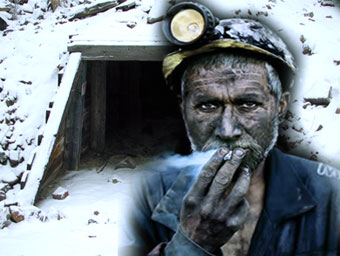

Home - Blog - Follow me on Twitter
Shit Mining: How to strike gold as a shit miner!
Digging the depths of your unconscious mind

You’re rich! You are sitting on a gold mine! Well... it’s more of a shit mine at
the moment! But, oh well, stick with me and we will extract some gold from that stinky stash of doo-doo. What I am
of course talking about is your unconscious mind, that veritable treasure trove of all things hidden...
Deep within, under layers and layers of detritus, lies a pretty fabulous being
called YOU! We just need to gouge out all the gunk and the goo that is covering it and causing it to malfunction at
the conscious level. When we do that you will be able to function at your best. Relationships will be easier.
Success will come easier. You will be more joyful. It all gets good…
Since the moment you were born, and perhaps long before, your unconscious mind has
been running programs to protect you and help you survive. Some of these programs are pretty primitive. Good for
evading sabre tooth tigers but not sophisticated enough for some of our modern challenges.
Every time you faced a stressful or traumatic event, you consciously or
unconsciously sought to flee from it. But there are a lot of situations and circumstances where you can’t run from
the pain. You are stuck with it. And so you consciously ran away from the pain by pushing it down into your
unconscious mind. This is like taking a dump into your own mouth. Not a good policy. You see shit is meant to be
eliminated not stored. Spread it around and fertlise things for sure. Just don’t bottle it up.
But we have bottled it up inside. And we stagger around with all this shit
covering our radiance. We shine into the world through our shit layers and wonder why the world looks brown.
Someone even wrote a book to express how most people feel titled, “Is It Just Me or Is Everything Shit?”
If you are tired of your life being covered in guano, and want to sniff the sweet
smell of success again, join me. I will teach you how to become a shit miner, to dig up the shit, and get it out so
you can be free of it for once. Grab your hard hat and your canary, and we’ll jump on the next available elevator
down the shaft and into your deep dark hole…
The Shit Miner’s Guide To Shit Mining Success
Things to be aware of…
- The key to shit mining is this… you have to bring the shit buried in your
unconscious to the surface, so that you can face it.
- Now you are an adult, you are mature enough to face your shit without
freaking out at how much it stinks.
- I appreciate that some people’s shit is darker than others. But shit of any
color stinks so let’s not squabble about it.
- The challenge is that you don’t know what shit you’ve got down there.
Unconscious means you aren’t conscious of it. We’ve got some probing to do…
- Your unconscious mind has numerous protection software programs running to
protect you from feeling the pain of those traumas you buried. It has distraction strategies it employs and
deploys whenever you get close to thinking about or experiencing your shit.
- These distractions can include things like illness, injury, accidents,
relationship troubles, business problems, things breaking and going wrong around you. And you thought it was
just random??
The Universality of Shit….
Shit is pretty much the same wherever you go and whoever is pooping it out.
Unconscious shit is no different. The same themes come up time and again. Rage. Fear. Shame. Guilt. All the usual
suspects. To help you access and dig this shit out, you need to play the game of What’s My Taboo??
“What’s My Taboo” The Game Show
So, we know that you’ve got lots of buried shit. If you didn’t your life would be
perfect and you wouldn’t be reading this. We also know that the unconscious mind employs distraction and sabotage
to keep your attention away from anything you’ve buried and become ‘not-conscious-of’. To dig up your shit, I want
you to ask yourself some questions and think about what ‘it’ could be.
Don’t be afraid to ask taboo questions. You know all those subjects where even to
hear the term makes part of you recoil in horror or fear. Don’t worry, most shit is fairly innocuous. Things like
feeling guilty because you pushed your baby brother of his high chair and he bumped his head. But if you go after
the deepest darkest possible shit first, it makes the other stuff so much easier to face.
Get some alone time. Go for a walk in nature or something like that. Keep moving.
Be honest and open with yourself. Be brave and real. Just face what it is. If you make yourself bigger than
anything that could possibly arise, it can’t hurt you.
And then just think about the worse possible shit that it could be…
The idea here is not to go on a witch hunt to blame others for your traumas, or to
condemn yourself for your sins. No! This is a healing process.
We dig up the shit to acknowledge it. To bring it into the Light. This is like
raising the dead. The shit is Lazarus! Raise it out of the depths so it can walk off and you can be free of it once
and for all.
Important Fact To Know About Shit Mining
Shit mining doesn’t involve a lot of sweat. Sure you need to be brave, open,
honest, real, and give it enough time to really achieve your aim… but… ‘bringing it up’ is often all it takes to
have profound affects on your life.
Bring that shit up into the light of your consciousness, look at it, and it’s as
though it dissolves away. The energy that was trapped in and around that shit and protecting you from it
dissipates.
A Common Example of How Shit Mining Can Help
In my own personal experience, going down the shit mine can really help. I had
sciatica for years. Tried all kinds of treatments both allopathic and alternative. I mean, I tried
everything.
Then I stumbled upon a Doctor who specialized in back pain, and he taught the shit
mining process as a cure for all back pain, plus a whole host of other illnesses. He said they were all
distractions from unconsciously held emotion. It took me a while to get it.
MRI scan told me I had two herniated disks. The shit mining doctor said that
didn’t matter. Loads of people had herniated disks, bone spurs, or curvature and had no pain at all. No it was the
shit I needed to get at!
So, I got digging. And the more I dug, and the more I paid attention to focusing
on what shit I had buried deep inside, and the less I focused on the distracting pain of sciatica, the quicker the
back pain faded away.
Here’s the thing, the unconscious mind didn’t give up at first. Those protection
strategies persist. They try other ways of distracting you. Other aches and pains. Other strange unexpected
ailments. But I quickly came to see the process that was going on, and when I focused on the shit and not the
symptoms, the symptoms went away and my life improved.
Now, whenever my life starts to get a little stinky, when things go wrong, I smell
shit, and I get digging. By bringing the unconscious beliefs, fears and anxieties to light, I clear my unconscious
a little bit more.
I ignore the distractors, dig up the hidden and then focus on what I want instead.
This gives the unconscious mind a new mission. Instead of protecting me from thinking about my fears, it can help
attract my consciously-chosen goals instead.
This is the way to strike gold through shit mining! Grab a shovel and stake your
claim today!

|
THE BRAIN
SQUEEZER NEWSLETTER!
Sign-Up For Wily
Walnut's "The Brain Squeezer" Newsletter and learn to squeeze all the creative thinking
juices from your brain! Get your juiciest ideas and genius IQ power
flowing!
Wily Walnut: Discover How
To Banish The Inner Moron, Shake Off the Dust Of Mediocrity and Discover the Genius You
Were Born To Be!
|
Wily Walnut is the headbrain at http://www.WilyWalnut.com, your top resource for unleashing the genius within, becoming infinitely creative,
intelligent and brilliant in all that you do!
GENIUS ARTICLES HOME IQ TESTS - CREATIVITY - GENIUS - BRAIN STORMING - SELF-HELP - BRAINTEASERS - WILY WALNUT
|  Digg
Digg Stumbleupon
Stumbleupon Technorati
Technorati Facebook
Facebook